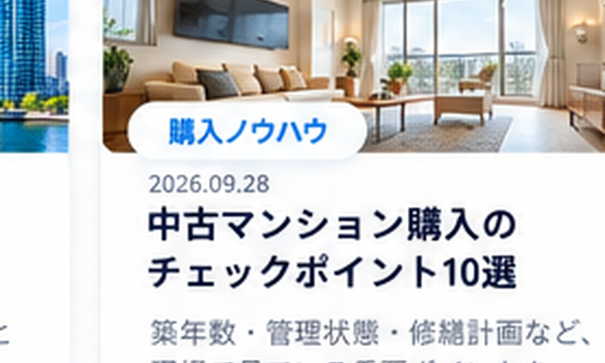

まず読みたい記事
エリア検討の入口になる記事このエリアで確認したいこと
価格妥当性東京23区との差額を、広さ・築年数・駅距離で具体的に比較。
生活動線総武線・東西線・京葉線など沿線ごとの通勤・生活動線を見る。
管理・修繕積立金、長期修繕計画、大規模修繕履歴を確認。
将来売却5〜10年後にどんな買主が検討するかまで考える。
物件名が決まっていれば、個別に比較できます
価格・坪単価・管理・ローン・将来売却までまとめて確認します。
千葉県の記事
東京23区 vs 千葉｜中古マンション購入で価格差をどう考える？千葉まで検討範囲を広げるとき、通勤・広さ・築年数・出口を比較します。
市川 vs 船橋｜中古マンション購入ならどちら？東京へのアクセス、駅周辺、物件の選択肢、将来売却を軸に比較します。
浦安 vs 市川｜都内通勤で選ぶ中古マンション通勤利便性だけでなく、街の性格・広さ・管理・価格の考え方を比較します。
本八幡の中古マンション購入ガイド｜駅近・広さ・将来売却をどう見る？本八幡で中古マンションを探すときの駅距離、沿線、管理、間取りの確認点を整理します。
千葉県で予算5,000万円｜東京23区より何を優先できる？広さ、築年数、駅距離を東京23区と比較しながら考えます。